ブログ
カラダのこと、季節のこと
柔道整復師・鍼灸師が、季節ごとに気をつけたいカラダのことや、普段のカラダの使い方をお伝えします。
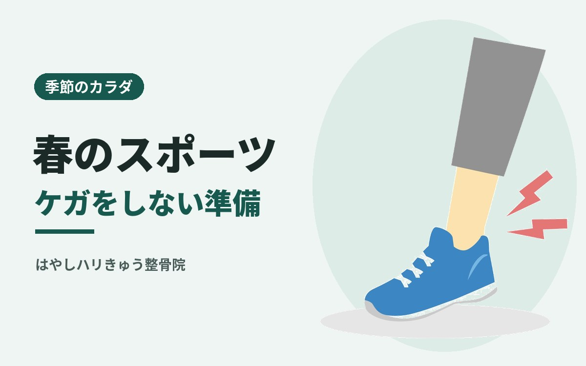
季節のカラダ 春のスポーツを始める前に。ケガをしない準備のコツ雪がとけると、外でのスポーツを再開する方が増えます。冬の間に変わったカラダで、ケガをせずにスポーツを始めるための準備をまとめました。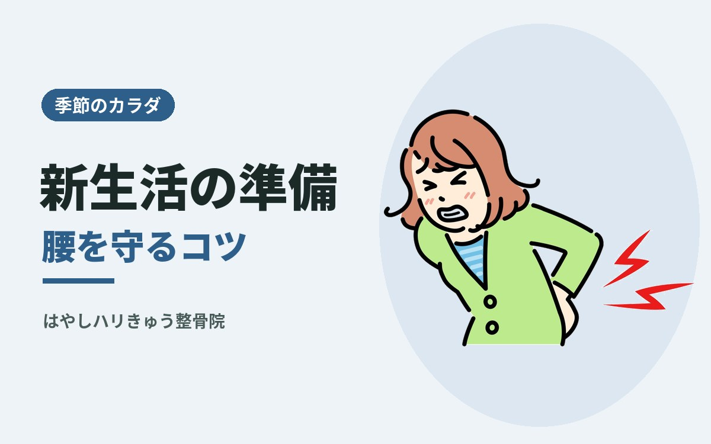
季節のカラダ 引っ越しや新生活の準備で腰を痛めないコツ荷造りや荷物運びが続く3月は、腰を痛めやすい季節です。新生活の準備で腰を守るコツと、新しい生活での座り方をお伝えします。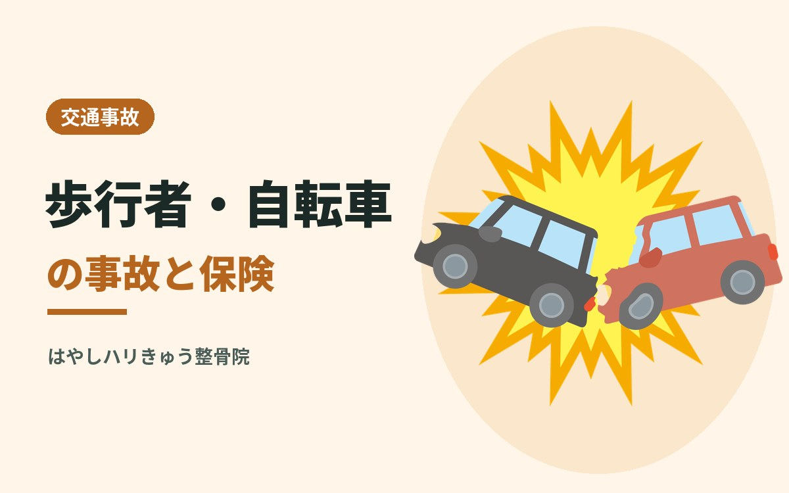
交通事故 歩行者や自転車の事故と自賠責保険雪どけが進むと、歩く方や自転車に乗る方が増えてきます。歩行者や自転車の事故で使える保険と、事故にあったときにやることをまとめました。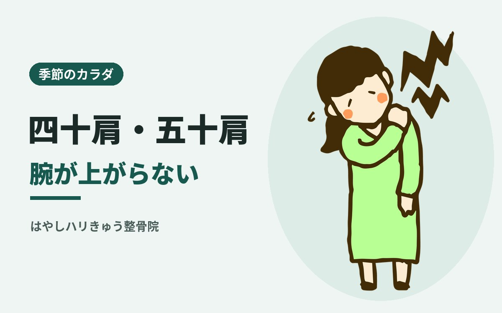
季節のカラダ 四十肩・五十肩で腕が上がらないときは腕を上げると肩が痛い、上着を着るのがつらい。四十肩・五十肩の時期ごとに気をつけることと、肩に負担をかけにくい姿勢をお伝えします。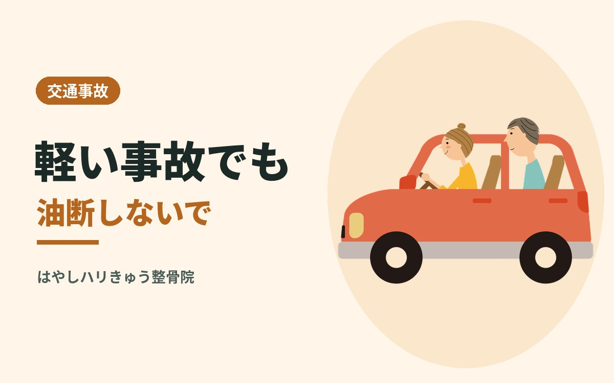
交通事故 軽い事故でも油断しないで。小さな追突や駐車場の事故「ちょっとぶつかっただけ」の事故でも、カラダは思った以上にゆさぶられています。軽い事故でもやっておきたいことをまとめました。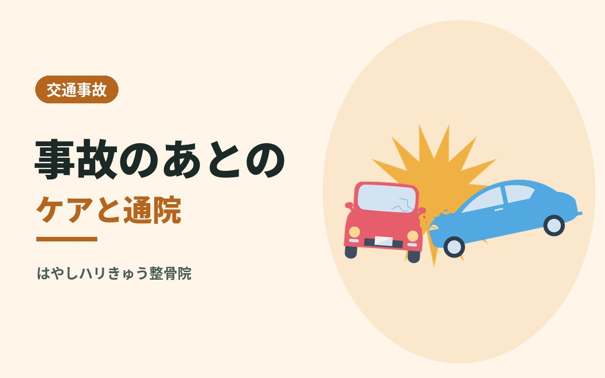
交通事故 事故のあとのカラダのケアと通院の続け方交通事故のケガは、通い始めてからの過ごし方も大切です。回復の段階に合わせたケアと、通院を続けるときのコツをまとめました。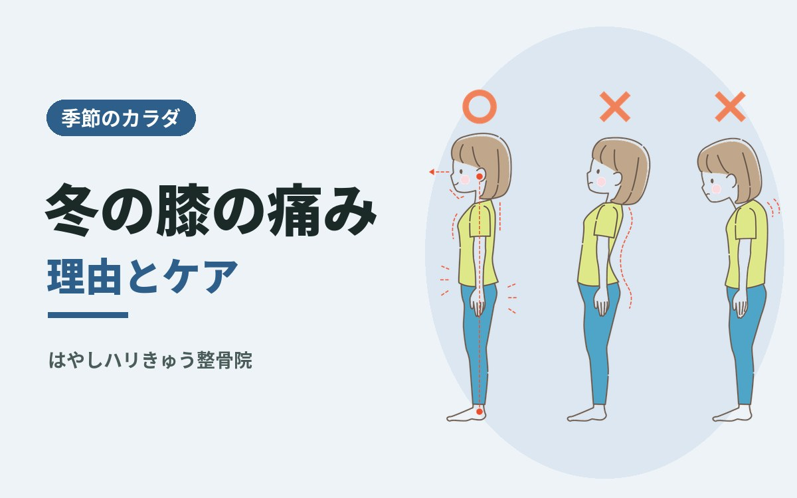
季節のカラダ 寒い日に膝が痛むのはなぜ？冬の膝のケア寒い日が続くと、膝のこわばりや痛みを感じる方が増えます。冬に膝が痛みやすい理由と、普段の生活でできる膝のケアをまとめました。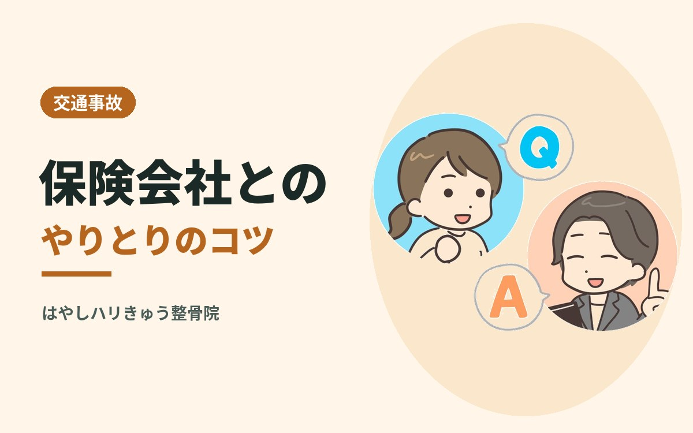
交通事故 保険会社とのやりとりで困りやすいこと事故のあとは、保険会社とのやりとりが続きます。患者さんが困りやすいことと、やりとりで気をつけたいこと、当院でできることをまとめました。 カラダの使い方
冷えとカラダのユガミ、骨ぴか整体でできること寒さでカラダが縮こまると、姿勢のくせが強くなり、カラダの歪み（ユガミ）にもつながります。冷えとユガミの関係と、骨ぴか整体（骨格矯正）でできることをお伝えします。
カラダの使い方
冷えとカラダのユガミ、骨ぴか整体でできること寒さでカラダが縮こまると、姿勢のくせが強くなり、カラダの歪み（ユガミ）にもつながります。冷えとユガミの関係と、骨ぴか整体（骨格矯正）でできることをお伝えします。
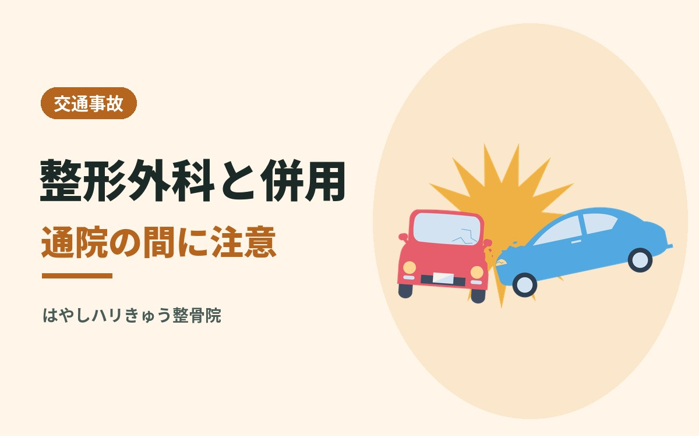
交通事故 整形外科と整骨院の併用。通院の間をあけすぎないで交通事故のケガは、整形外科と整骨院に一緒に通うことができます。それぞれの役割と、通院の間があきすぎたときに起こりやすいことをお伝えします。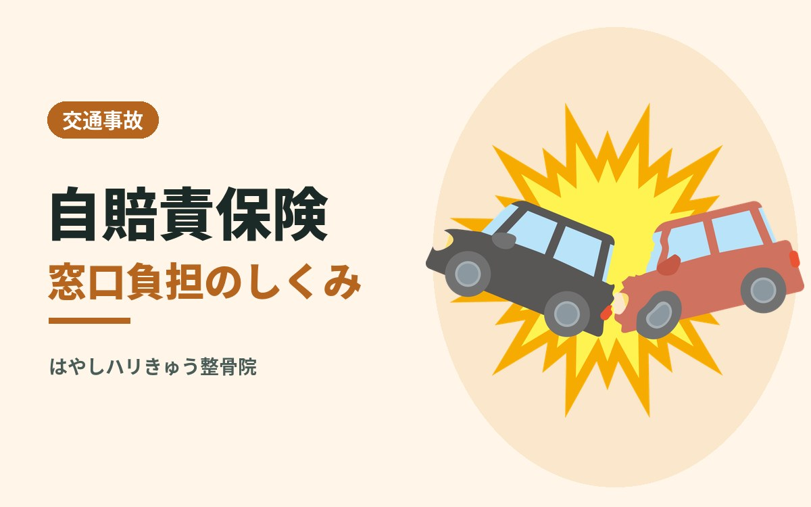
交通事故 交通事故の自賠責保険。窓口での負担はどうなる？「整骨院に通うと、お金はいくらかかるの？」というご質問にお答えします。自賠責保険のしくみと、窓口でのご負担について、かんたんにまとめました。 カラダの使い方
こたつ・ソファの姿勢が腰にひびく話こたつやソファでくつろぐ時間が長くなる季節。気づかないうちに、腰に負担がかかっています。くつろぎながら腰を守る座り方のコツをお伝えします。
カラダの使い方
こたつ・ソファの姿勢が腰にひびく話こたつやソファでくつろぐ時間が長くなる季節。気づかないうちに、腰に負担がかかっています。くつろぎながら腰を守る座り方のコツをお伝えします。
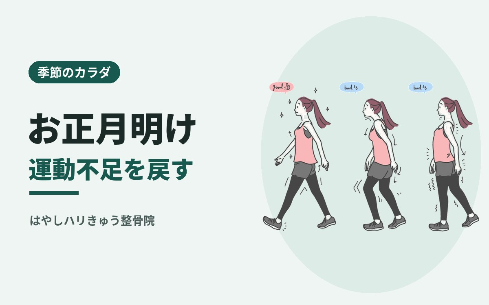
季節のカラダ お正月明けのカラダ。運動不足をゆっくり戻すコツお正月は、動く量が減り、姿勢のくせも強くなりがちです。お休み明けのカラダを、無理なく普段の動きに戻していくコツをまとめました。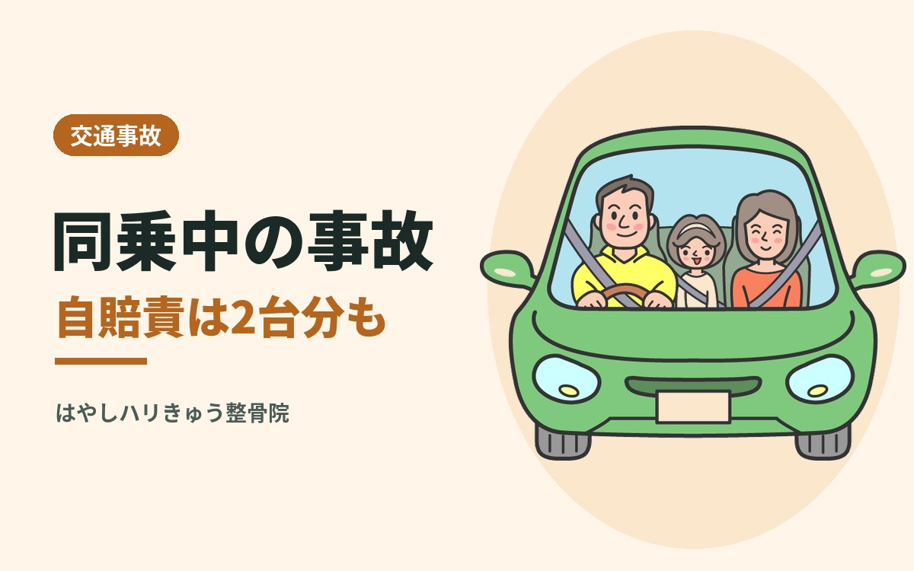
交通事故 同乗中の事故でケガをしたら。自賠責保険が2台分使えることも年末年始は、家族や友人の車に乗る機会がふえます。同乗中の事故でケガをしたときの自賠責保険のしくみと、知らないと損をしやすいポイントをお伝えします。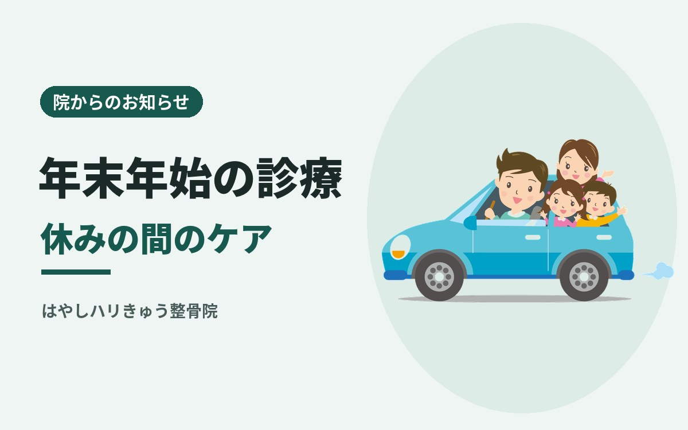
院からのお知らせ 年末年始の診療と休みの間のカラダのケア年末年始の診療日のお知らせと、お休みの間にカラダの調子をくずさないためのケアのコツをまとめました。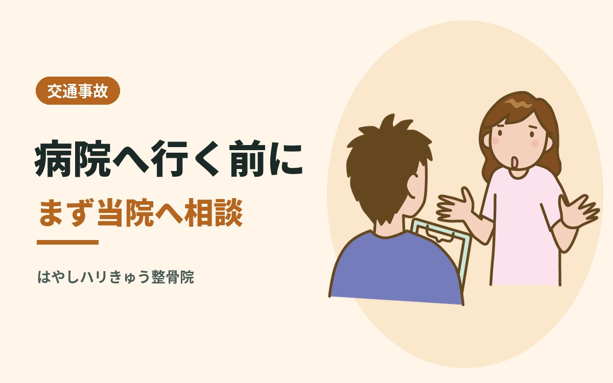
交通事故 事故のあと病院へ行く前に整骨院へ相談してほしい理由交通事故のあと、まず病院へ行く前に当院へご連絡いただきたい理由があります。提携の整形外科のご紹介と、通い方の相談についてまとめました。 季節のカラダ
年末の大掃除で腰を痛めないコツ年末の大掃除は、中腰や重い物の持ち運びが続き、腰を痛めやすい作業です。腰を守る動き方と、無理をしない進め方のコツをまとめました。
季節のカラダ
年末の大掃除で腰を痛めないコツ年末の大掃除は、中腰や重い物の持ち運びが続き、腰を痛めやすい作業です。腰を守る動き方と、無理をしない進め方のコツをまとめました。
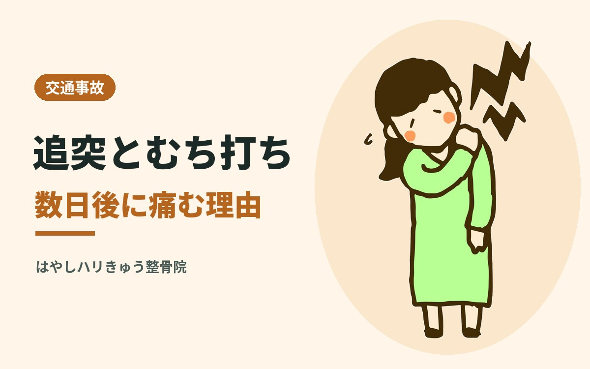
交通事故 雪道の追突事故とむち打ち。痛みが数日後に出る理由冬の北海道は、スリップによる追突事故が増えます。追突されたときにカラダに起きることと、むち打ちの痛みが数日たってから出てくる理由をお伝えします。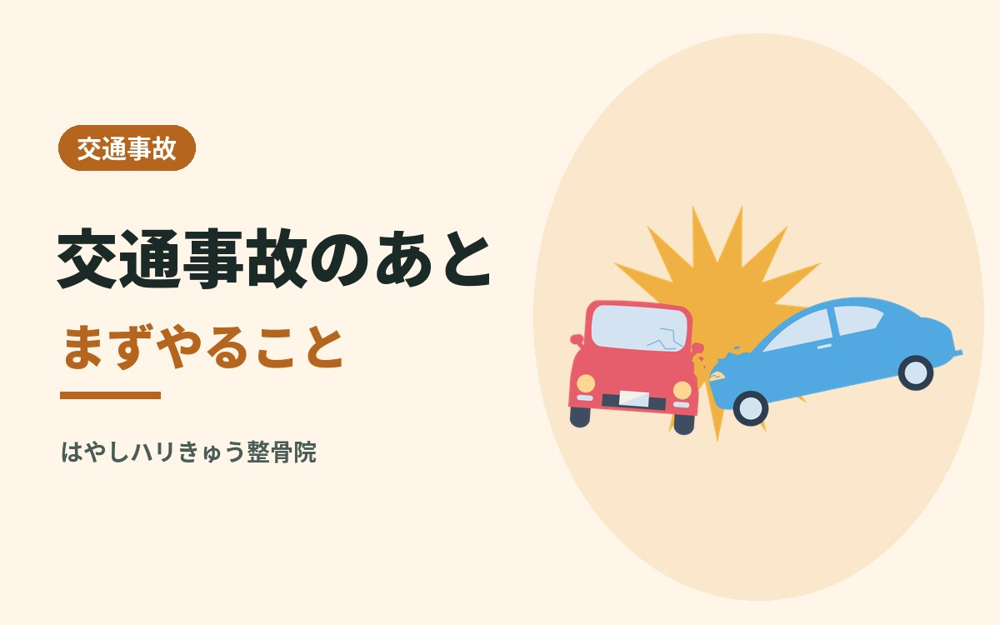
交通事故 交通事故は冬に増えます。事故のあとにやること雪道やアイスバーンで、冬は交通事故が増える季節です。事故のあとにカラダを守るためにやることと、病院と整骨院の通い方をまとめました。 季節のカラダ
首こりと頭痛、冬に増える理由寒くなると、首こりと一緒に頭痛が出る方が増えます。冬に首こりや頭痛が増える理由と、普段の生活でできる対策をまとめました。
季節のカラダ
首こりと頭痛、冬に増える理由寒くなると、首こりと一緒に頭痛が出る方が増えます。冬に首こりや頭痛が増える理由と、普段の生活でできる対策をまとめました。
 季節のカラダ
雪道で転ばない歩き方と転んだときの対処これからの季節、江別の道はつるつるになります。雪道で転ばないための歩き方と、もし転んでしまったときにまずやることをまとめました。
季節のカラダ
冬の朝、ぎっくり腰になりやすいのはなぜ？寒い朝、顔を洗おうとかがんだ瞬間に「ぎくっ」。冬の朝は、ぎっくり腰が起こりやすい時間です。その理由と、朝の過ごし方のコツをまとめました。
季節のカラダ
雪道で転ばない歩き方と転んだときの対処これからの季節、江別の道はつるつるになります。雪道で転ばないための歩き方と、もし転んでしまったときにまずやることをまとめました。
季節のカラダ
冬の朝、ぎっくり腰になりやすいのはなぜ？寒い朝、顔を洗おうとかがんだ瞬間に「ぎくっ」。冬の朝は、ぎっくり腰が起こりやすい時間です。その理由と、朝の過ごし方のコツをまとめました。
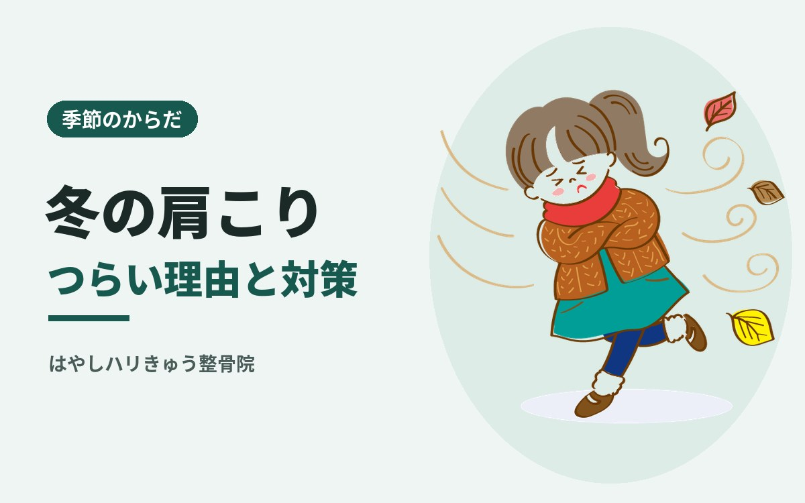
季節のカラダ 寒くなると肩こりがつらいのはなぜ？冬の肩こり対策朝晩が冷えこむこの時期、「いつもより肩こりがつらい」という声が増えます。寒い時期ならではの理由と、今日からできる対策をまとめました。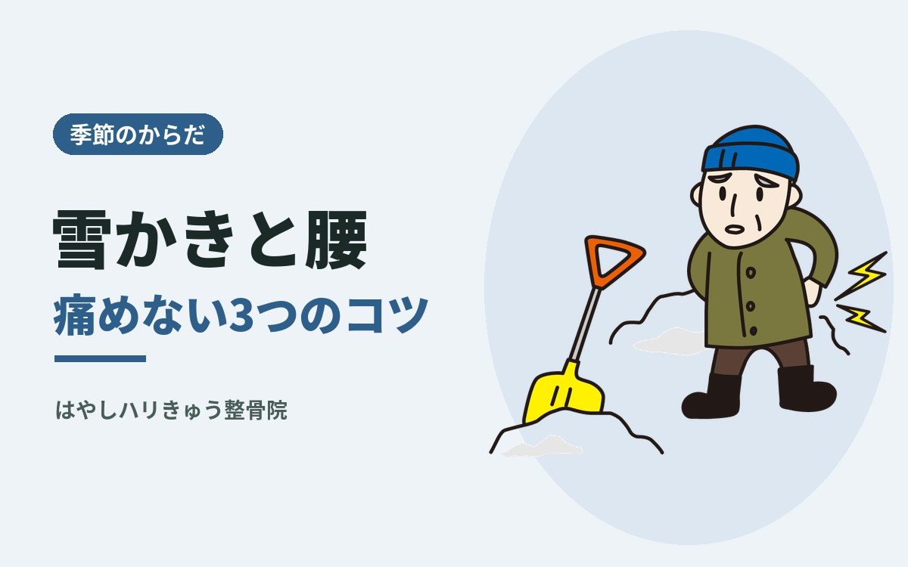
季節のカラダ 雪かきシーズンの前に。腰を痛めないための3つのコツ江別では、もうすぐ雪かきの季節です。毎年このころから、雪かきのあとに腰を痛めて来院される方が増えます。始める前に知っておきたいコツをまとめました。気になる症状はお気軽にご相談ください
予約優先制 〒067-0031 北海道江別市元町32-1 無料駐車場12台 日曜・祝日も受付